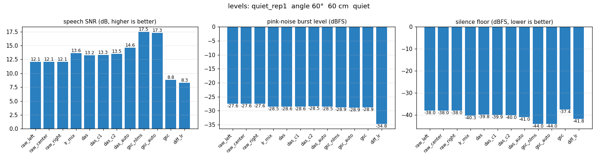
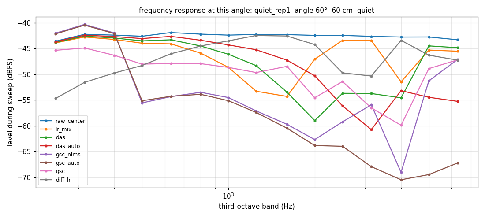
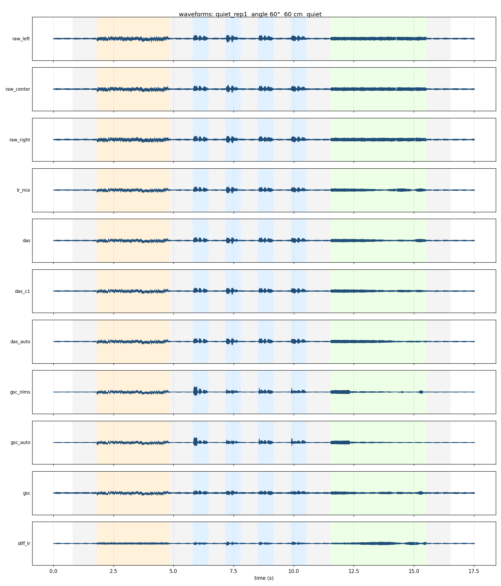
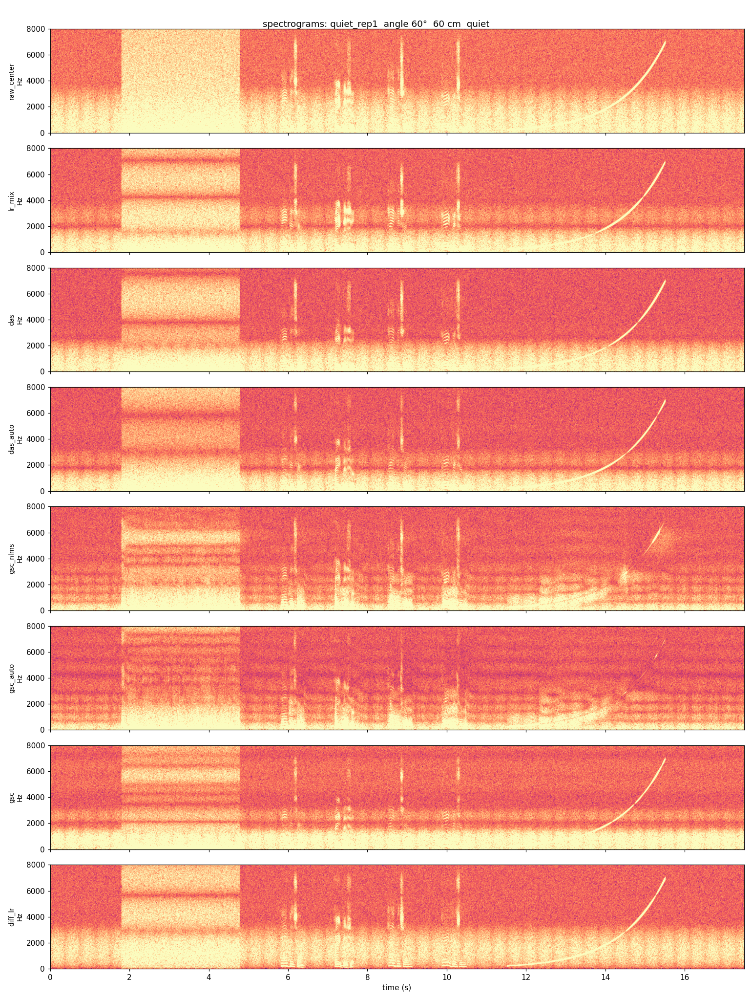

angle 60°, 60 cm, quiet, 17.53 s. Clip offset 0.8 s (confidence 0.928).
Microphones hear the source at +59° (L-R delay 5.62 samples, peak 9.4).
| path | rms_dbfs | speech_snr_db | noise_level_dbfs | silence_floor_dbfs | interf_rejection_db | interf_rejection_lf_db | snr_under_interference_db | speech_preservation | peak | clips |
|---|---|---|---|---|---|---|---|---|---|---|
| raw_left | -29.84 | 12.1 | -27.57 | -37.96 | 0.8974 | 7115 | 0 | |||
| raw_center | -29.84 | 12.09 | -27.56 | -37.96 | 0.9589 | 6926 | 0 | |||
| raw_right | -29.84 | 12.09 | -27.57 | -37.96 | 0.8967 | 6288 | 0 | |||
| lr_mix | -31.42 | 13.64 | -28.5 | -40.33 | 0.9877 | 5659 | 0 | |||
| das | -31.5 | 13.25 | -28.56 | -39.83 | 5560 | 0 | ||||
| das_c1 | -31.56 | 13.31 | -28.58 | -39.88 | 0.993 | 5597 | 0 | |||
| das_c2 | -31.37 | 13.49 | -28.49 | -40.05 | 0.9813 | 5697 | 0 | |||
| das_auto | -31.47 | 14.62 | -28.54 | -40.98 | 0.9803 | 5692 | 0 | |||
| gsc_auto | -32.41 | 17.31 | -28.95 | -44.0 | 0.7749 | 8052 | 0 | |||
| diff_lr | -34.99 | 8.31 | -34.75 | -41.76 | 0.0031 | 4230 | 0 | |||
| gsc | -32.46 | 8.82 | -28.86 | -37.4 | 0.9394 | 4641 | 0 | |||
| gsc_nlms | -32.16 | 17.49 | -28.85 | -43.96 | 0.775 | 8583 | 0 |



